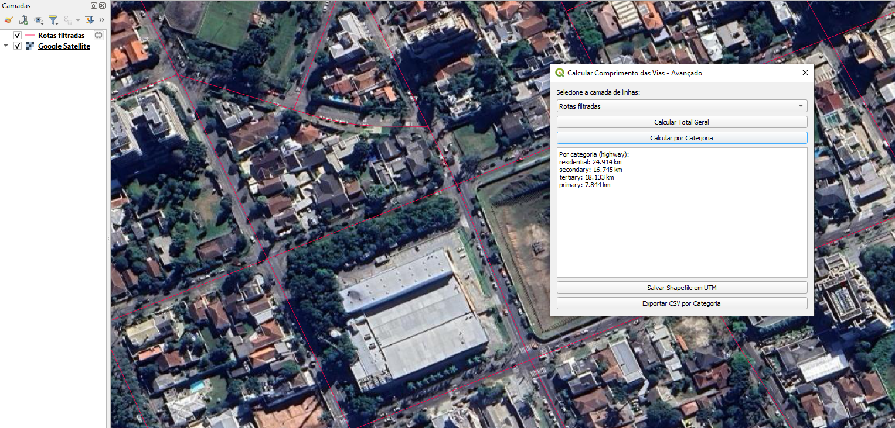

Screenshots

Results by Category

Overall Results

Example of CSV Export
QGIS plugin to calculate total length and length by category of linear features.
Allows calculating total feature length, creating additional fields with individual values, and exporting results in Shapefile or CSV.
The Calculate Road Length - Advanced plugin is a Python QGIS plugin that automates linear feature length calculation. It allows:
highway field category;comp_km field containing each feature's length;Calculations use the EPSG:31982 coordinate system, ensuring metric accuracy even if the original layer is in another CRS.
highway field categorycomp_km field for each featureIn my work, we had to manually calculate road lengths and group by category, which was time-consuming and error-prone. To automate this, I created Calculate Road Length, allowing:
comp_kmResults by Category
Overall Results
Example of CSV Export